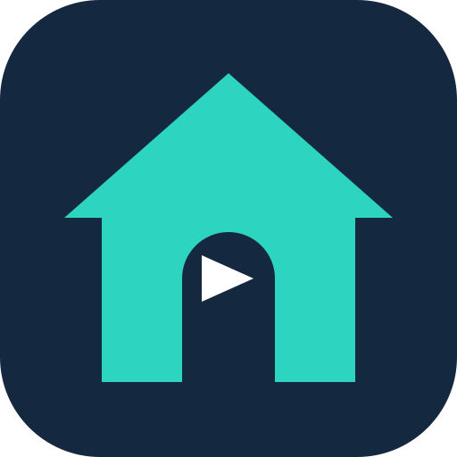
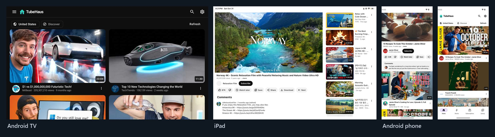

TubeHausYouTube, without the Google account.
TubeHaus is a free, open-source YouTube client with no tracking and no ads. Install the app on your TV, phone, computer or iPad, or run it on your own server for the whole household.

No account, no tracking
Subscriptions, history and playlists stay on your device or your own server, not in a Google account.
Looks like YouTube
Same layout and keyboard shortcuts, so there is nothing new to learn.
Made for the TV too
A TV mode that works with a remote, on Android TV and Google TV.
SponsorBlock built in
Skip sponsor segments and intros automatically.
Downloads and background play
Save videos for offline, keep audio playing with the screen off, picture-in-picture.
Free and open source
AGPL-3.0. Read the code, build it yourself, or send a fix.
The app
Each app has its own YouTube engine and talks to YouTube directly. Nothing else to set up.
- Android phones, tablets and Android TV / Google TV (on TV: Downloader code 3155410)
- Windows, macOS (Apple Silicon and Intel) and Linux (.deb, .rpm)
- iPad / iPhone (beta, installed with Sideloadly)
The server
One docker compose on a home PC, a Raspberry Pi or a cheap cloud VM. Every device in the house watches in the browser and shares one library, and YouTube never sees your home address. Extras only on the server: live captions for live streams, send to TV, calm mode.

Who made this
I'm not a programmer. I wanted YouTube on my TV and phone without a Google account, so I built TubeHaus. Most of the code is written with Claude Code, and I test every release on my own devices. Bug reports and ideas are welcome on GitHub.